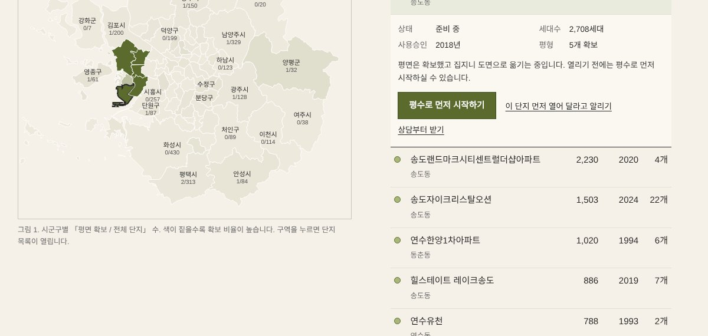
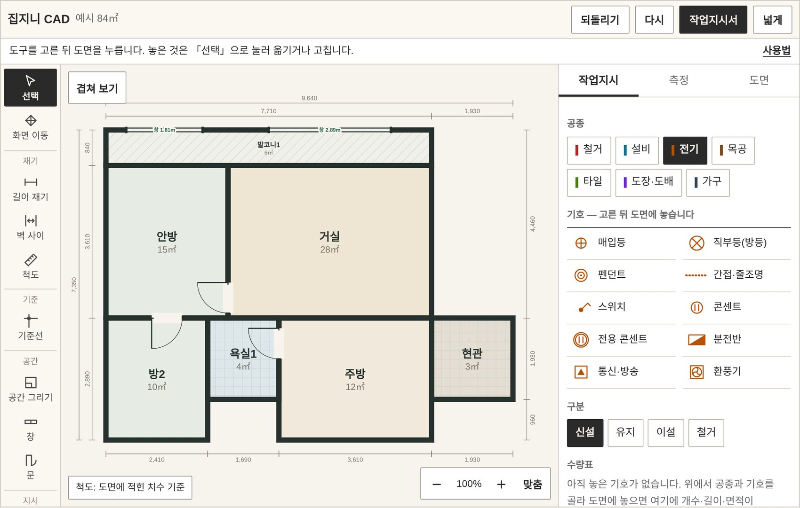
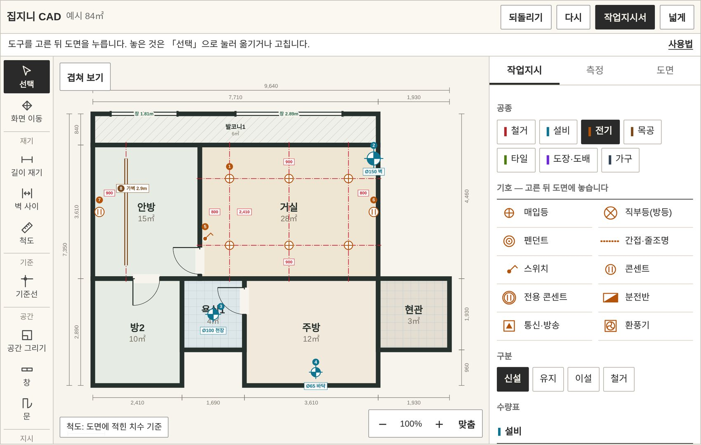
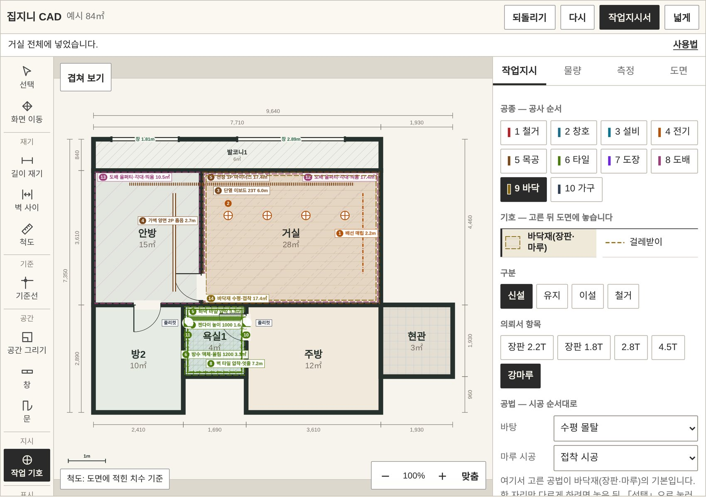
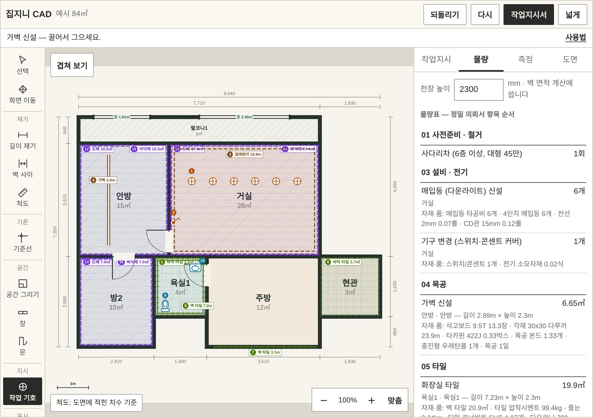

집지니 · 처음 오신 분께
처음 하는 셀프 인테리어,
용어부터 사용법까지
견적서를 처음 받으면 모르는 말이 절반입니다.
꼭 알아야 할 말 58개와 공사 순서, 집지니 사용법 다섯 단계를 한 쪽에 모았습니다.
공사는 이 순서로 갑니다
순서가 바뀌면 한 일을 다시 뜯게 됩니다. 물 쓰는 일과 먼지 나는 일을 먼저 하고, 겉을 입히는 일을 뒤에 합니다.
| 1 | 철거 | 뜯어내기, 폐기물 반출 |
|---|---|---|
| 2 | 설비 | 수도·배수·난방 배관 |
| 3 | 전기 배선 | 선을 먼저 끌어 둠 |
| 4 | 목공 | 가벽, 천장, 문틀, 몰딩 |
| 5 | 욕실 방수·조적 | 방수 뒤 물 채워 확인 |
| 6 | 타일 | 욕실, 주방 벽, 현관, 발코니 |
| 7 | 욕실 천장·기구 | 천장, 도기, 수전 |
| 8 | 필름 | 문, 문틀, 가구 겉 |
| 9 | 도장 | 발코니, 천장 |
| 10 | 도배 | 초배 뒤 벽지 |
| 11 | 바닥 | 마루, 장판 |
| 12 | 조명·스위치 | 등기구, 콘센트 달기 |
| 13 | 가구 | 싱크대, 붙박이장 |
| 14 | 청소·점검 | 준공 청소, 하자 확인 |
집에 따라 빠지는 단계가 있고, 샷시 교체는 철거 직후에 들어갑니다.
기본 용어 58개
현장에서 쓰는 말 그대로 적었습니다. 일본어에서 온 말(젠다이, 메지)도 견적서에 그대로 나오기 때문에 같이 실었습니다.
먼저 알아 둘 말
| 용어 | 뜻 | 알아 둘 점 |
|---|---|---|
| 턴키 | 설계부터 시공·관리까지 한 업체에 통째로 맡기는 방식 | 편하지만 업체 마진이 줄마다 들어갑니다 |
| 반셀프 | 공정별 기술자를 따로 부르되, 순서와 일정은 내가(또는 코디가) 잡는 방식 | 집지니 코디네이팅이 이 방식입니다 |
| 셀프 인테리어 | 자재 구매와 기술자 섭외, 일정 관리를 모두 직접 하는 방식 | 집지니 도면으로 물량과 예상 비용을 먼저 봅니다 |
| 공정 | 철거, 전기, 타일처럼 일의 종류로 나눈 한 단계 | 견적서는 공정별로 묶여 있습니다 |
| 물량 | 자재나 작업의 양. ㎡(넓이), m(길이), 개, 식(한 묶음)으로 셉니다 | 물량 × 단가 = 금액 |
| 적산 | 도면에서 물량을 세는 일 | 집지니 도면 화면이 대신 셉니다 |
| 품(인건비) | 기술자 한 사람이 하루 일하는 값. 「1품」은 한 사람 하루 | 「타일공 2품」 = 두 사람 하루, 또는 한 사람 이틀 |
| 여유분(로스) | 잘라 쓰고 남는 몫을 감안해 더 사는 양 | 타일 10%, 도배 5% 안팎 |
| 실측 | 현장에서 줄자·레이저로 실제 치수를 재는 일 | 도면 치수와 다를 수 있어 계약 전에 합니다 |
| 전용면적 | 현관 안쪽 우리 집만의 넓이. 등기부에 적힌 값 | 84㎡ ≈ 분양 34평형 |
철거 · 설비
| 용어 | 뜻 | 알아 둘 점 |
|---|---|---|
| 철거 | 기존 마감과 가구를 뜯어내는 일 | 폐기물 처리비가 따로 붙습니다 |
| 보양 | 승강기·복도·남길 바닥을 판재나 비닐로 덮어 보호하는 일 | 공사 첫날 하고 끝나면 걷습니다 |
| 양중 | 자재를 현장 층까지 올리는 일 | 승강기 사용료, 사다리차 비용과 엮입니다 |
| 행위허가 | 발코니 확장, 비내력벽 철거처럼 구청 허가가 필요한 공사의 절차 | 허가 없이 하면 원상복구 명령을 받을 수 있습니다 |
| 설비 | 수도·배수·난방 배관 공사 | 욕실·주방 위치를 바꾸면 커집니다 |
| 코어 작업 | 콘크리트 벽이나 바닥에 둥근 구멍을 뚫는 일 | 에어컨 배관, 배기관 자리 |
| 구배(물매) | 물이 배수구로 흐르도록 바닥에 주는 기울기 | 욕실·발코니 바닥의 기본 |
| 유가 | 바닥 배수구 덮개 | 줄눈과 맞춘 사각 유가를 많이 씁니다 |
목공 · 전기
| 용어 | 뜻 | 알아 둘 점 |
|---|---|---|
| 가벽 | 새로 세우는 칸막이 벽 | 각재나 경량 철골에 석고보드를 붙입니다 |
| 석고보드 | 벽·천장 바탕이 되는 판. 보통 9.5mm 두 겹 | 방수 구역에는 방수 석고보드 |
| 몰딩 | 벽과 천장이 만나는 모서리를 덮는 띠 | 요즘은 얇은 것이나 없는 마감(무몰딩)을 많이 합니다 |
| 걸레받이 | 벽 아래쪽과 바닥이 만나는 자리의 띠 | m 단위로 셉니다 |
| 문선·문틀 | 문 둘레의 틀과 그 겉의 띠 | 문만 바꿀지, 틀까지 바꿀지에 따라 값이 크게 다릅니다 |
| 매입등(다운라이트) | 천장 속에 넣는 둥근 등. 3·4·6인치 | 4인치는 방 하나에 4~6개가 필요합니다 |
| 직부등 | 천장 겉에 바로 다는 등 | 집지니는 베란다에만 씁니다 |
| 간접등 | 빛이 직접 보이지 않게 숨긴 띠 조명 | 천장 단 내림이나 가구 아래 |
| 전용선 | 인덕션·에어컨처럼 전기를 많이 쓰는 기기에 따로 끄는 선 | 분전반에 차단기를 따로 둡니다 |
| 분전반 | 집 안 전기 차단기가 모인 함 | 오래된 집은 교체를 같이 봅니다 |
욕실 · 타일
| 용어 | 뜻 | 알아 둘 점 |
|---|---|---|
| 방수 | 물이 아래층으로 새지 않게 바닥과 벽 아래를 막는 일 | 바르고 말린 뒤 물을 채워 확인(담수 시험)합니다 |
| 덧방 | 기존 타일을 뜯지 않고 그 위에 새 타일을 붙이는 방식 | 싸고 빠르지만 문턱이 높아지고 두 번은 못 합니다 |
| 떠발이 | 타일 뒤에 몰탈을 떠 붙이는 방식 | 벽이 고르지 않을 때. 품이 더 듭니다 |
| 압착 | 바탕에 접착제를 빗살로 펴고 타일을 눌러 붙이는 방식 | 바탕이 평평해야 합니다 |
| 줄눈(메지) | 타일 사이 틈을 메우는 재료 | 색과 폭이 인상을 크게 바꿉니다 |
| 졸리컷 | 타일 모서리를 45도로 깎아 맞대는 마감 | 모서리 띠(코너비드) 없이 깔끔하지만 품이 듭니다 |
| 젠다이 | 세면대·욕조 옆에 벽돌로 쌓아 만든 선반 턱 | 위에 타일이나 인조 대리석을 얹습니다 |
| 조적 | 벽돌이나 블록을 쌓는 일 | 젠다이, 욕조 자리 단 |
| 도기 | 변기·세면대 같은 위생 도자기 | 수전(수도꼭지)과 따로 셉니다 |
| 돔 천장·평 천장 | 욕실 천장재. 둥글게 올라간 것과 평평한 것 | 평 천장에 매입등을 넣는 추세입니다 |
마감 (필름 · 도장 · 도배 · 바닥)
| 용어 | 뜻 | 알아 둘 점 |
|---|---|---|
| 필름(인테리어 필름) | 문·문틀·가구 겉에 붙이는 시트 | 교체보다 싸게 색을 바꿉니다. 바탕이 울면 안 됩니다 |
| 도장 | 페인트칠. 퍼티로 면을 고른 뒤 칠합니다 | 발코니는 곰팡이 방지 페인트 |
| 퍼티 | 벽의 이음매와 못 자국을 메우는 반죽 | 도장 품질은 퍼티에서 갈립니다 |
| 초배 | 벽지 밑에 먼저 바르는 종이 | 면을 고르게 하고 벽지를 덜 울게 합니다 |
| 합지·실크 | 벽지 종류. 합지는 종이, 실크는 비닐 코팅 | 실크가 오염에 강하고 값이 높습니다 |
| 강마루 | 합판 위에 무늬 층을 붙인 바닥재 | 접착 시공. 난방에 무난합니다 |
| 강화마루 | 끼워 맞추는 바닥재. 바닥에서 띄워 깝니다 | 물에 약합니다 |
| 장판(시트) | 말아서 까는 비닐 바닥재. 두께 1.8~5mm | 가장 쌉니다 |
| 수평 몰탈 | 바닥 높낮이를 맞추는 미장 | 마루나 큰 타일을 깔기 전에 봅니다 |
| 실리콘(코킹) | 틈을 메우는 마감재 | 욕실은 곰팡이 방지용 |
창호 · 가구 · 마무리
| 용어 | 뜻 | 알아 둘 점 |
|---|---|---|
| 샷시(창호) | 창틀과 유리 | 가장 비싼 공정 가운데 하나. 「자」 단위로 값을 부릅니다 |
| 로이 유리 | 열이 덜 빠져나가게 코팅한 유리 | 복층(두 겹) 유리와 같이 씁니다 |
| 확장 | 발코니를 거실·방으로 넓히는 공사 | 단열과 행위허가가 따라옵니다 |
| 단열 | 벽·바닥에 단열재를 넣어 결로와 열 손실을 줄이는 일 | 확장부, 외벽 쪽 방 |
| 결로 | 찬 벽에 물방울이 맺히는 현상 | 곰팡이의 원인. 단열과 환기로 막습니다 |
| 붙박이장 | 벽에 고정해 짜는 수납장 | 자(약 30cm) 단위로 값을 부릅니다 |
| 상부장·하부장 | 싱크대의 위쪽 장과 아래쪽 장 | 상판 재질(인조 대리석, 세라믹)에 따라 값이 갈립니다 |
| 준공 청소 | 공사 먼지를 걷어내는 마지막 청소 | 평당으로 값을 부릅니다 |
| 하자 보수(A/S) | 공사 뒤 생긴 문제를 고쳐 주는 일 | 기간과 범위를 계약서에 적습니다 |
| 부가세 별도 | 견적 금액에 부가가치세 10%가 빠져 있다는 뜻 | 합계에 10%를 더해야 실제 낼 돈입니다 |
집지니 사용법 다섯 단계
가입 없이 무료로 쓰실 수 있습니다. 컴퓨터 화면이 편하지만 휴대폰에서도 됩니다.
1
지도에서 우리 아파트를 찾습니다
단지 이름이나 주소를 적으면 지도가 그 자리로 갑니다.
평면이 준비된 단지는 진한 점, 준비 중인 단지는 연한 점, 아직인 단지는 희끗한 점입니다.

2
평면을 엽니다
평면 그림을 올리면 방을 나눠 깨끗한 도면으로 다시 그립니다.
그림이 없으면 평수와 방 개수가 비슷한 예시 평면으로 시작합니다.

3
공사할 곳을 도면에 표시합니다
오른쪽에서 공정을 고르고, 등·콘센트·타일·철거선 같은 기호를 도면에 놓습니다.
기호를 놓을 때마다 물량이 세어집니다.

4
자재와 공법을 고릅니다
같은 타일도 덧방이냐 철거 후 시공이냐에 따라 값이 다릅니다.
기호를 고르면 아래에 공법이 나오고, 고른 대로 금액이 바뀝니다.

5
물량과 예상 공사비를 봅니다
「물량」을 누르면 자재 목록과 예상 공사비가 나옵니다. 어림값이고 부가세 10%는 별도입니다.
직접 하실 분은 이 목록으로 자재를 준비하고, 맡기실 분은 「이 도면으로 정밀 견적 받기」를 누릅니다.

화면의 단추 하나하나는 도면 화면 사용 안내에 그림과 함께 적어 두었습니다.
다음에 할 일
먼저 지도에서 단지를 골라 얼마쯤 드는지 보세요.
해 보다가 막히거나 맡기고 싶어지면, 그린 도면 그대로 의뢰하실 수 있습니다.